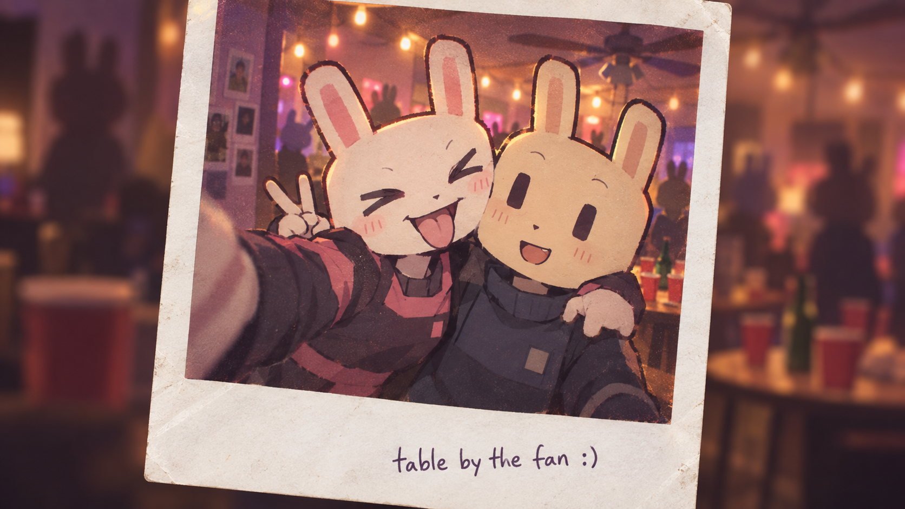

← → DRIFT SPACE RISE · RELEASE FLOAT
MESSAGES
MAYA
UNSENT

EMPTY.
ON THE DESK
A SHORT GAME ABOUT DRUG ABUSE
SKIP
Just for a little while.
6–8 MINUTES · HEADPHONES RECOMMENDED
Fictional drug experience. Altered visuals and minor injuries.
AN INTERACTIVE SHORT STORYA / D or ← → MOVE E INTERACT
AN INTERACTIVE SHORT STORY
SKIP
You don’t have to skip the next conversation.
Original art, procedural animation & music.
Created with AI. No external audio recordings.
SINGAPORE · SUPPORT
You can start with a conversation.
A trusted person, a school counsellor, or a professional service can help you take a next step.
National Addictions Management ServiceAddiction assessment, treatment and support.Appointments · 6389 2200 ↗national mindline 177124/7 mental health support. Singapore’s first national mental health helpline and textline service.Hotline · 1771WhatsApp · 6669-1771 (message only)
Medical emergency · 995SCDF emergency ambulance service. For emergencies.National Council Against Drug Abuse (NCADA)Learn about drug harms, prevention resources and community efforts towards a drug-free Singapore.Visit the official NCADA website ↗This fictional story is not a simulation of a specific drug or everyone's experience.